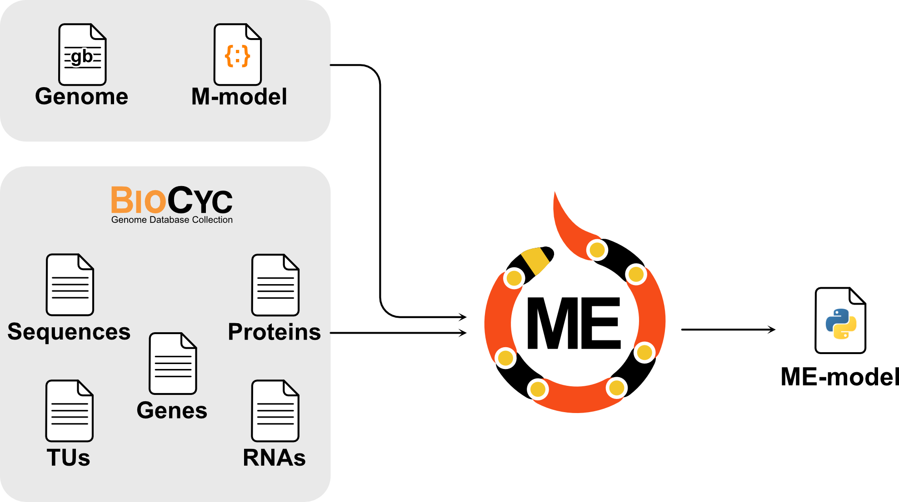

2. Description of Inputs
coralME takes a total of 7 inputs, 2 required and 5 optional:
2.1. Types of inputs
2.1.1. Required
Genome file (genome.gb)
M-model (m_model.json or m_model.xml)
2.1.2. Optional
Downloadable from an existing BioCyc database under Special SmartTables. If no optional files are provided, coralME complements them with genome.gb
Genes file, by default:genes.txt
RNAs file, by default:RNAs.txt
Proteins file, by default:proteins.txt
TUs file, by default:TUs.txt.
Sequences file, by default:sequences.fasta
2.1.3. Configuration
inputs.json
orgnanism.json

2.2. Description
2.2.1. Genome (genome.gb)
The genome file contains provides coralME with: * Gene annotations. * Gene sequences.
2.2.1.1. Requirements
Locus tags (locus_tag or old_locus_tag) MUST be consistent with m_model.json. Make sure you download the same genome file that was used to reconstruct the M-model.
Has name genome.gb.
Genbank-compliant file. Must be read by BioPython correctly.
It must contain the entire genome sequence. Make sure to enable Customize View>Show Sequence before downloading the genbank file from NCBI.
See an example of genome.gb and sequences.fasta
2.2.2. M-model (m_model.json)
The M-model provides coralME with the metabolic model components: * Metabolic network (M-matrix) * Gene-protein-reaction associations * Environmental and internal constraints * Reaction subsystems * Biomass composition
2.2.2.1. Requirements
This file should meet the following requirements: 1. Gene identifiers MUST be consistent with genome.gb locus_tag or old_locus_tag. Make sure you download the same genome file that was used to reconstruct the M-model. 2. Has name m_model.json. 3. COBRApy-compliant. Must be read by cobrapy-0.25.0.
See an example of m_model.json
2.2.3. Gene dictionary (genes.txt) [optional]
genes.txt is a gene information table that can be downloaded from the All genes of organism SmartTable of the BioCyc database. Click Export>to Spreadsheet File>frame IDs. This file is optional and is meant to complement the information from genome.gb in case the latter is missing genes.
genes.txt provides coralME with: * Gene locus tags * Gene names * Gene annotations * Gene positions * Gene products (protein, tRNA, etc.)
2.2.3.1. Requirements
This file should meet the following requirements: 1. Contains the index Gene Name and columns Accession-1, Left-End-Position, Right-End-Position, and Product. 2. Accession-1 MUST be consistent with the gene IDs in the GPRs of m_model.json and with the locus_tag (or old_locus_tag) in genome.gb. 3. Gene Name is consistent with: * Column Genes of polypeptide, complex, or RNA of proteins.txt * Column Gene of RNAs.txt * Column Genes of transcription unit of TUs.txt * Gene identifiers in sequences.fasta 4. Product is consistent with: * Index of proteins.txt * Index of RNAs.txt 5. Must be tab-separated
2.2.3.2. Notes
Requirements 3, 4 and 5 regarding ID consistency should be directly met if the files are downloaded from the same BioCyc database.
Left-End-Position and Right-End-Position do not need to be consistent with the positions genome.gb. coralME will keep the positions in genome.gb over the specified ones in genes.txt
See an example of genes.txt
2.2.4. Proteins (proteins.txt) [optional]
proteins.txt is a protein complex information table that can be downloaded from the All proteins of organism SmartTable of the BioCyc database. Click Export>to Spreadsheet File>frame IDs. This file is optional and is meant to complement the information from genome.gb.
proteins.txt provides coralME with: * Protein complex compositions
2.2.4.1. Requirements
This file should meet the following requirements: 1. Contains the index (Proteins Complexes) and columns Common-Name, Genes of polypeptide, complex, or RNA, and Locations. 2. (Proteins Complexes) is consistent with: * Column Product of genes.txt 3. Genes of polypeptide, complex, or RNA is consistent with: * Index Gene Name of genes.txt 4. Must be tab-separated
2.2.4.2. Notes
Requirements 2, 3 and 4 regarding ID consistency should be directly met if the files are downloaded from the same BioCyc database.
See an example of proteins.txt
2.2.5. RNAs (RNAs.txt) [optional]
RNAs.txt is an RNA annotation table that can be downloaded from the All RNAs of organism SmartTable of the BioCyc database. Click Export>to Spreadsheet File>frame IDs. This file is optional and is meant to complement the information from genome.gb.
RNAs.txt provides coralME with: * Genes annotated as RNA products (e.g. tRNA, rRNA, etc.) * RNA gene annotations (e.g. amino acids - tRNA associations)
2.2.5.1. Requirements
This file should meet the following requirements: 1. Contains the index (All-tRNAs Misc-RNAs rRNAs) and columns Common-Name, and Gene 2. (All-tRNAs Misc-RNAs rRNAs) is consistent with: * Column Product of genes.txt 3. Gene is consistent with: * Index Gene Name of genes.txt 4. Must be tab-separated
2.2.5.2. Notes
Requirements 2, 3 and 4 regarding ID consistency should be directly met if the files are downloaded from the same BioCyc database.
See an example of RNAs.txt
2.2.6. TUs (TUs.txt) [optional]
TUs.txt is a transcription unit annotation table that can be downloaded from the All TUs of organism SmartTable of the BioCyc database. Click Export>to Spreadsheet File>frame IDs. This file is optional and is meant to complement the information from genome.gb.
TUs.txt provides coralME with: * Co-transcribed genes (operons). * Direction of transcription. * TU IDs.
2.2.6.1. Requirements
This file should meet the following requirements: 1. Contains the index Transcription-Units and columns Genes of transcription unit, and Direction 2. Genes of transcription unit is consistent with: * Index Gene Name of genes.txt 3. Must be tab-separated
2.2.6.2. Notes
Requirements 2 and 3 regarding ID consistency should be directly met if the files are downloaded from the same BioCyc database.
See an example of TUs.txt
2.2.7. Gene sequences (sequences.fasta) [optional]
sequences.fasta is a nucleotide FASTA file that can be downloaded from the All genes of organism SmartTable of the BioCyc database. Click Export>FASTA>Find sequences. This file is optional and is meant to complement the information from genome.gb in case the latter is missing genes.
sequences.fasta provides coralME with: * Gene sequences
2.2.7.1. Requirements
2.2.7.2. Notes
Requirements 1, 2 and 3 regarding ID consistency should be directly met if the files are downloaded from the same BioCyc database.
See an example of sequences.fasta
2.2.8. Configuration of paths to files (inputs.json)
inputs.json is a JSON file containing paths to input files for coralME.
inputs.json provides coralME with: * Paths to input files
2.2.8.1. Requirements
This file should meet the following requirements: 1. Must be JSON-compliant 2. Must contain paths to required files (M-model and Genome). 3. All defined files must exist.
2.2.8.2. Notes
See an example of input.json
2.2.9. Configuration of parameters (organism.json)
organism.json is a JSON file containing paths to input files for coralME.
organism.json provides coralME with: * ME-modeling parameters
2.2.9.1. Requirements
This file should meet the following requirements: 1. Must be JSON-compliant 2. Must contain the standard fields.
2.2.9.2. Notes
See an example of organism.json